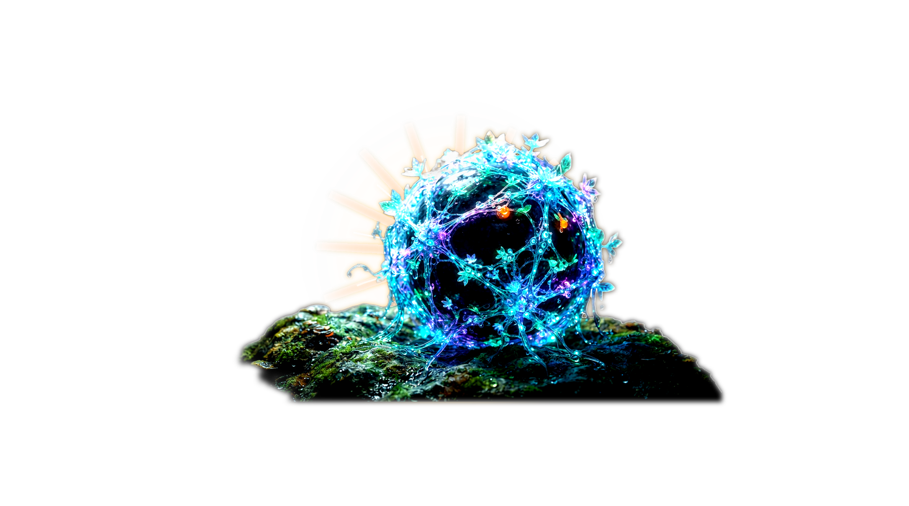
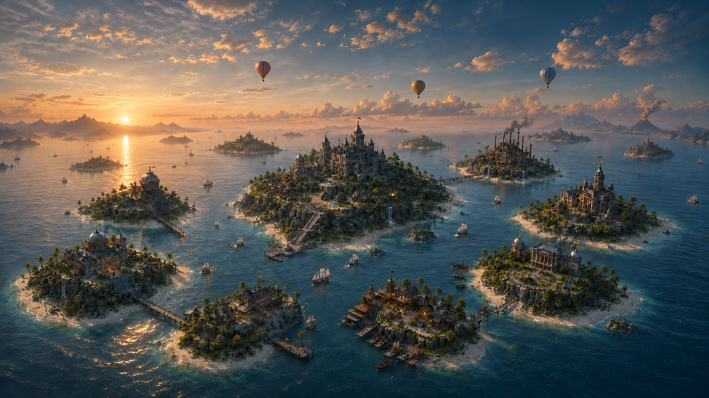
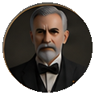

Главная усадьба • Управление и принятие решений
Уровень 3 — Непосредственное выполнение задач и редактирование контекста
Объединение пространственной метафоры Estate, стюарда Бэрримора и интерактивных островов.